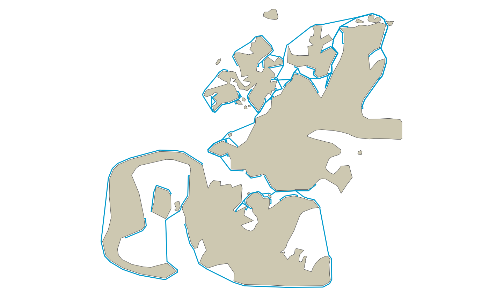

Re-routing Straight Line Paths Around Barriers - A Visibility Graph Demo
reroute_demo.RmdThis vignette demonstrates the basic concept within the {pathroutr} package for re-routing paths that cross a barrier around the barrier using the shortest path through a visibility graph.
The larger intent is to use this approach for adjust the movement tracks of marine animals through water when estimated paths incorrectly cross land.
The Test Environment
library(dplyr)
#>
#> Attaching package: 'dplyr'
#> The following objects are masked from 'package:stats':
#>
#> filter, lag
#> The following objects are masked from 'package:base':
#>
#> intersect, setdiff, setequal, union
library(ggplot2)
library(sf)
#> Linking to GEOS 3.8.1, GDAL 3.1.1, PROJ 6.3.1
library(ggspatial)First, let’s setup our test space with our included land barrier and points of interest. This was based off of the north Kodiak Island region in Alaska, USA (but, is not an exact replica. So, not for navigational use!!).
ggplot() +
ggspatial::annotation_spatial(data = land_barrier,
fill = "cornsilk3", size = 0) +
ggspatial::layer_spatial(data = poi) +
theme_void()
The complexity of the nearshore environment with small islands and narrow passages is a difficult situation for estimating marine animal tracks from telemetry devices that often have error associated with the location estimates.
Here, we sample 15 of our points of interest and, then, connect them as a line representing a path across our complicated landscape.
l_pts <- poi %>% slice_sample(n = 15)
path <- l_pts %>% summarise(do_union = FALSE) %>% st_cast('LINESTRING')
ggplot() +
ggspatial::annotation_spatial(land_barrier, fill = "cornsilk3", size = 0) +
ggspatial::layer_spatial(poi) +
ggspatial::layer_spatial(path, color = "deepskyblue3") +
ggspatial::layer_spatial(l_pts[1,], color = "darkgreen", size = 4) +
ggspatial::layer_spatial(l_pts[15,], color = "darkred", size = 4) +
theme_void()
Now, let’s sample 10000 points along this string and this will represent our simulated path of track observations.
track_pts <- st_sample(path, size = 10000, type = "regular")
ggplot() +
ggspatial::annotation_spatial(land_barrier, fill = "cornsilk3", size = 0) +
ggspatial::layer_spatial(path, color = "deepskyblue3") +
ggspatial::layer_spatial(track_pts) +
theme_void()
Re-route the path
The first function we’ll use form the {pathroutr} package is get_barrier_segments() which identifies all of the consecutive track points that intersect with the land barrier.
segs_tbl <- get_barrier_segments(track_pts,land_barrier)
segs_tbl
#> # A tibble: 29 x 6
#> sid start_idx end_idx n_pts start_pt end_pt
#> <int> <dbl> <dbl> <dbl> <POINT [m]> <POINT [m]>
#> 1 1 45 95 49 (86710.1 957067.9) (86067.41 956398.8)
#> 2 2 205 416 210 (84653.49 954926.9) (81941.34 952103.5)
#> 3 3 899 941 41 (75732.96 945640.4) (75193.1 945078.4)
#> 4 4 1146 1226 79 (72558.07 942335.2) (71529.77 941264.7)
#> 5 5 1323 1647 323 (70282.95 939966.8) (66118.32 935631.3)
#> 6 6 1691 1790 98 (66135.77 935499.6) (67725.93 936419.2)
#> 7 7 2090 2119 28 (72544.6 939205.8) (73010.41 939475.1)
#> 8 8 2175 2196 20 (73909.89 939995.3) (74247.2 940190.4)
#> 9 9 2218 2476 257 (74600.57 940394.7) (78744.63 942791.2)
#> 10 10 2650 3545 894 (81529.52 944423.4) (95354.49 953623.6)
#> # … with 19 more rowsOur next step is to create a visibility graph. This is, essentially, our road network for our marine environment. At some point, I’ll provide greater detail on this process. But, in simple terms, we connect all of the vertices for our barrier polygon with a Delaunay triangle mesh and, then, remove any of the edges that cross land. Our prt_visgraph() function returns a SpatialLinesNetwork created with the stplanr package.
With our network created, we need to identify the nearest node on the network for the start and end points of each identified segment.
vis_graph <- prt_visgraph(land_barrier, buffer = 150)
segs_tbl <- segs_tbl %>% prt_nearestnode(vis_graph)Calculate all of our shortest path routes around the barrier for each segment
segs_tbl <- segs_tbl %>% prt_shortpath(vis_graph)
ggplot() +
ggspatial::annotation_spatial(land_barrier, fill = "cornsilk3", size = 0) +
ggspatial::layer_spatial(segs_tbl$geometry, color = "deepskyblue3") +
theme_void()
This last bit is the point where we insert the fixed points back into our original path. It’s currently a bit messy and I’ll soon turn this into a standalone function.
track_pts_fix <- prt_update_points(track_pts, segs_tbl)Did it work?
A final plot of our corrected path. The green dot is the start and the red dot then end. The blue line is the shortest path fix and the black line is the new path. Red line represents the original path.
If everything is working correctly, there should not be any black lines crossing land.
track_pts <- track_pts %>% st_cast('LINESTRING')
track_line_fixed <- track_pts_fix %>% summarise(do_union = FALSE) %>% st_cast('LINESTRING')
ggplot() +
ggspatial::annotation_spatial(land_barrier, fill = "cornsilk3", size = 0) +
ggspatial::layer_spatial(track_pts, color = "red3") +
ggspatial::layer_spatial(segs_tbl$geometry, color = "deepskyblue3", size = 2) +
ggspatial::layer_spatial(track_line_fixed) +
ggspatial::layer_spatial(l_pts[1,], color = "darkgreen", size = 4) +
ggspatial::layer_spatial(l_pts[15,], color = "darkred", size = 4) +
theme_void()